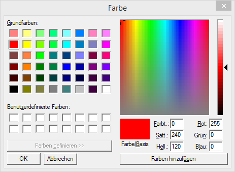
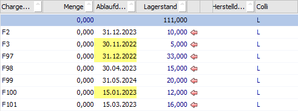
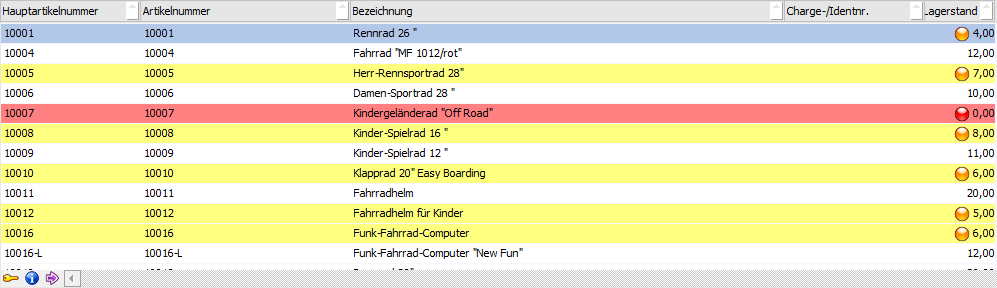
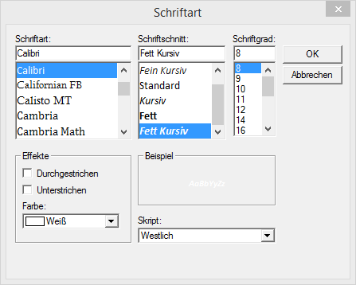
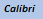
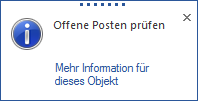

Im Bereich der Formatierungen können bis zu 255 Styles hinterlegt werden. Mit diesen Styles kann bestimmt werden, wie sich eine positive Prüfung der Bedingung im Programm auswirken soll. Folgende Einstellungen sind möglich:
Ø Formatierung
Hier werden die Nummer und der Name der Formatierung angezeigt. Wenn eine neue Formatierung angelegt wird, wird hier der Text "(nicht vergeben)" angezeigt, der sich erst dann ändert, wenn die Formatierungszeile gespeichert wird.
Ø Name
In diesem Feld kann der Name der Formatierung vergeben werden, wobei Namen auch mehrmals vergeben werden können, weil die Unterscheidung auch über die Nummer möglich ist. Sinnvollerweise sollten aber eindeutige Namen vergeben werden.
Hinweis
Wenn bei einer bestehenden Formatierungszeile das Feld Name geleert und bestätigt wird, dann wird die komplette Zeile gelöscht.
Ø Grafik
In der Spalt Grafik kann ein Icon hinterlegt werden, das dann auch beim Zutreffen der Prüfung im Programm angezeigt wird. Das gewünschte Icon kann aus dem Bereich "Grafiken" durch einen Doppelklick auf den Eintrag übernommen werden. Soll eine Grafik entfernt werden, so kann das durch Drücken der Entfernen-Taste bewerkstelligt werden.
Ø Ausrichtung
Aus der Auswahllistbox kann eingestellt werden, wo die Grafik in weiterer Folge angezeigt werden soll. Dazu stehen folgende Möglichkeiten zur Verfügung:
ü Textausrichtung
Das ist die
Standardeinstellung, dabei setzt das Programm die Grafik abhängig vom
Variablentyp - bei Textvariablen wird die Grafik bei Bildschirmformularen links
neben dem Text, bei Tabellenanzeigen und bei Eingabefeldern rechts neben dem
Text positioniert, bei Zahlenwerten wird die Grafik links neben der Zahl
positioniert, wenn ein Element zentriert (in einem Formular) angezeigt wird,
dann wird die Grafik rechts angezeigt.
ü links vom Text
Mit dieser
Einstellung wird die Grafik immer links vom Element angezeigt.
ü rechts vom Text
Mit dieser
Einstellung wird die Grafik immer rechts vom Element angezeigt.
Hinweis
Wird die Formatierung in weiterer Folge in einer Eingabemaske verwendet, so wird die Grafik standardmäßig rechts angezeigt, die Ausrichtung wird in dem Fall ignoriert.
Ø Anzeigetext
In diesem Feld kann ein Text eingegeben werden, der dann im Programm angezeigt wird, wenn das formatierte Element oder die Grafik, die mit angegeben wurde, angeklickt wird - das kann z.B. so aussehen:
Im Text können auch Variablen verwendet werden, sofern sie im verwendeten Fenster zur Verfügung stehen. Dabei muss die Variable in der Form <VAR:View/Var> im Text hinterlegt werden.
Hinweis
Ein Zeilenumbruch im Text kann mit der Formatierungsanweisung \n erzielt werden. Im dargestellten Beispiel wurde der Text so hinterlegt:
Achtung! \nLäuft bald ab
Ø Hintergrundfarbe
Wenn die Bedingung auf ein Eingabefeld oder auf eine Tabelle wirken soll, so kann hier eine Farbe definiert werden, in der das Feld im Fenster oder in der Tabelle angezeigt werden soll. Für Formularausgaben hat diese Einstellung keine Auswirkung. Durch Drücken der F9-Taste wird das Fenster "Farbe" geöffnet, wo dann die Farbe ausgewählt und mit OK übernommen werden kann. Der RGB-Code kann aber auch manuell eingegeben werden.
Die Zelle wird in weiterer Folge auch in der hinterlegten Farbe angezeigt.

Ø gültig für
Wenn die Bedingung für eine Tabelle eingerichtet wird, dann kann in diesem Feld definiert werden, ob nur die eine Spalte (aktueller Wert) oder die gesamte Zeile "eingefärbt" werden soll.
Beispiel - nur Spalte eingefärbt

Beispiel - gesamte Zeile eingefärbt

Ø Textfarbe
Wenn das Eingabefeld bzw. die Tabellenspalte mit einer Hintergrundfarbe versehen wurde, dann kann es ggf. dazu kommen, dass der Inhalt der Tabelle aufgrund des Farbkontrasts nicht mehr richtig erkennbar ist. Daher gibt es auch die Möglichkeit, die Textfarbe entsprechend anzupassen. Auch hier kann wieder über die F9-Taste das Farben-Fenster geöffnet werden, wo dann die gewünschte Farbe ausgewählt und übernommen werden kann, bzw. kann der RGB-Farbcode direkt eingegeben werden.
Hinweis
In einer Tabelle gilt die Textfarbe nur für die Spalte, wo die bedingte Formatierung hinterlegt ist, nicht für die restlichen Spalten, wenn die ganze Zeile "eingefärbt" ist.
Ø Font
In diesem Feld kann ein alternativer Font für das Feld hinterlegt werden. Durch Drücken der F9-Taste wird das Fenster "Schriftart" geöffnet, in dem dann die gewünschte Schriftart mit allen Attributen definiert werden kann.

Mit OK dann die Einstellung in das Eingabefeld übernommen, z.B.: {SPECIALFONT=NAME:CALIBRI;SIZE:80;COLOR:255 255 255;BOLD;ITALIC;WEIGHT:700;}. Wird dann das Feld bestätigt, wird die verwendete Schriftart mit dem entsprechenden Attributen angezeigt, z.B.

Ø Link-Aktion
Aus der Auswahllistbox kann eine Aktion ausgewählt werden, die beim Klick auf die Grafik bzw. auf das Element optional ausgeführt werden kann. Dazu gibt es folgende Möglichkeiten:
ü keine Aktion
Es wird keine
weiterführende Aktion ausgeführt.
ü Makro ausführen
Damit kann die
Ausführung eine WinLine Makros angestoßen werden.
ü Programm/Datei ausführen
Mit
dieser Option kann ein externes Programm oder eine Datei aufgerufen werden.
Dabei können alle Dateiformate verwendet werden, die über Windows mit einer
Standardapplikation verknüpft sind.
Hinweis
Wenn ein Programm / eine Datei ausgeführt werden soll, so stehen für den kompletten Link max. 255 Zeichen zur Verfügung.
Ø Aktion
Abhängig davon, welcher Typ von Aktion im Feld "Link-Aktion" gewählt wurde, kann hier entweder ein WinLine Makro, ein Programm oder eine Datei gewählt werden, die beim Klick auf das Element bzw. die Grafik angeboten werden soll - das sieht dann so aus:

Mit dem Klick auf "Mehr Information für dieses Objekt" wird dann die hinterlegte Aktion ausgeführt.
Hinweis 1
Wenn es sich um ein Makro handelt, dann muss dieses sinnvollerweise für alle Benutzer zur Verfügung stehen.
Hinweis 2
Aus den Feldern Anzeigetext und Link-Aktion ergeben sich somit folgende Kombinationsmöglichkeiten:
1.) Anzeigetext ist gefüllt und Link-Aktion ist leer.
In diesem Fall wird nur der Anzeigetext durch einen Klick auf das Icon angezeigt, es passiert nichts weiter.
2.) Anzeigetext ist gefüllt und Link-Aktion ist hinterlegt.
In diesem Fall wird der Anzeigetext durch einen Klick auf das Icon angezeigt und es wird der Link "Mehr Information für dieses Objekt" angezeigt, der dann die Aktion ausführen lässt.
3.) Anzeigetext ist leer und Link-Aktion ist hinterlegt.
In diesem Fall wird durch einen Klick auf das Icon gleich die Aktion ausgeführt, das kleine Fenster wird nicht angezeigt.
4.) Weder Anzeigetext ist gefüllt, noch ist eine Link-Aktion hinterlegt.
In diesem Fall wird beim Klick auf das Icon keine Reaktion gezeigt, es passiert nichts.
Hinweis 3
Der Anzeigetext (auch mit einer ggf. hinterlegten Aktion) wird nur in der WinLine angezeigt, nicht in der WinLine mobile.